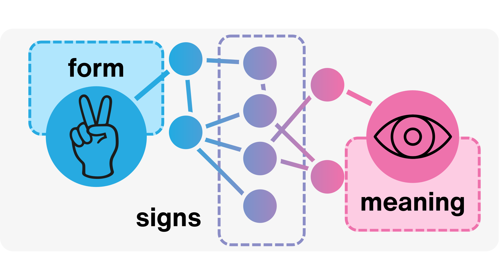
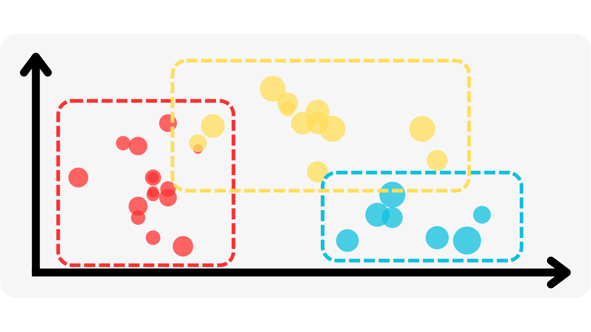
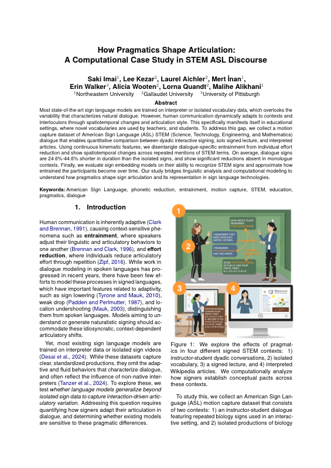
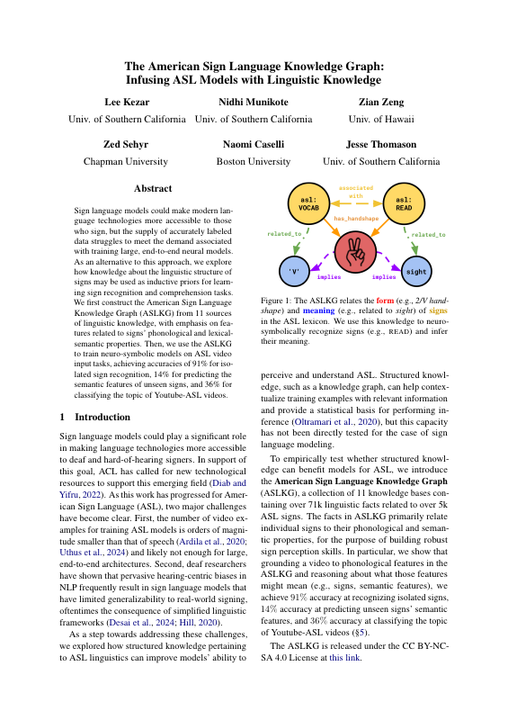
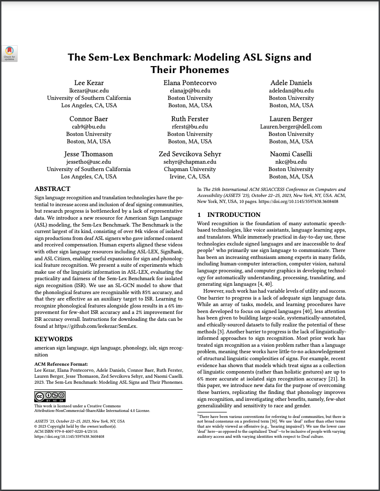
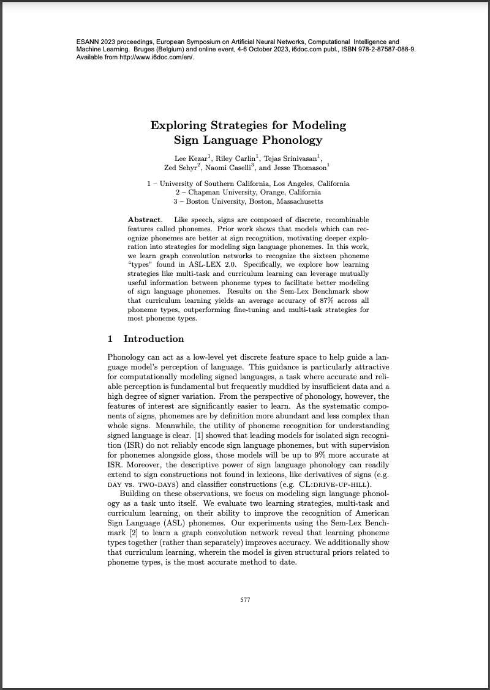
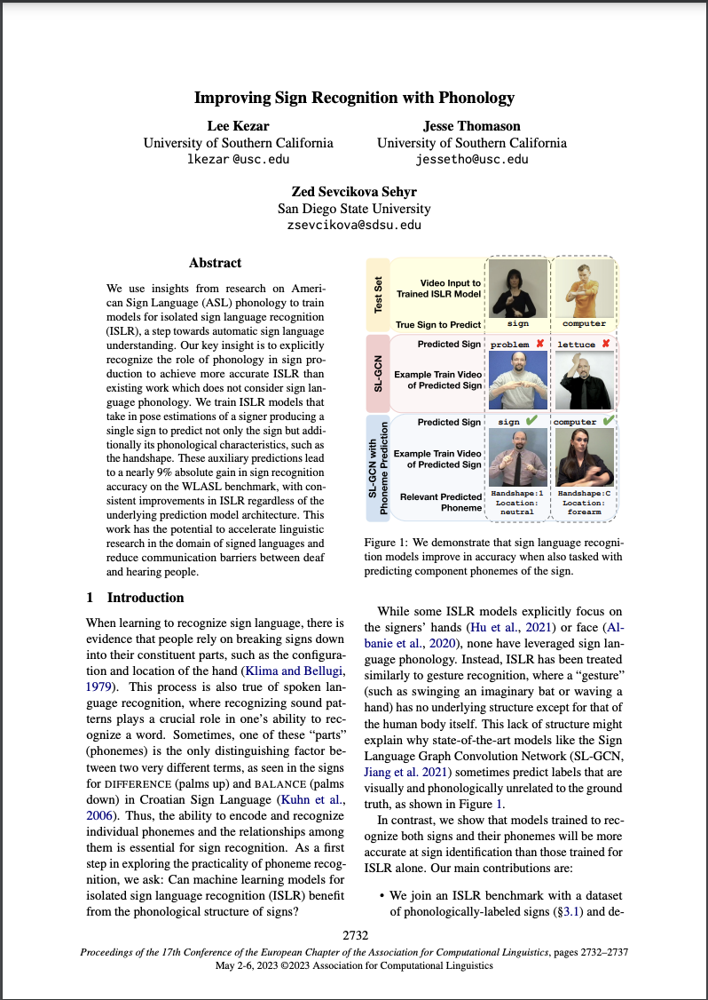
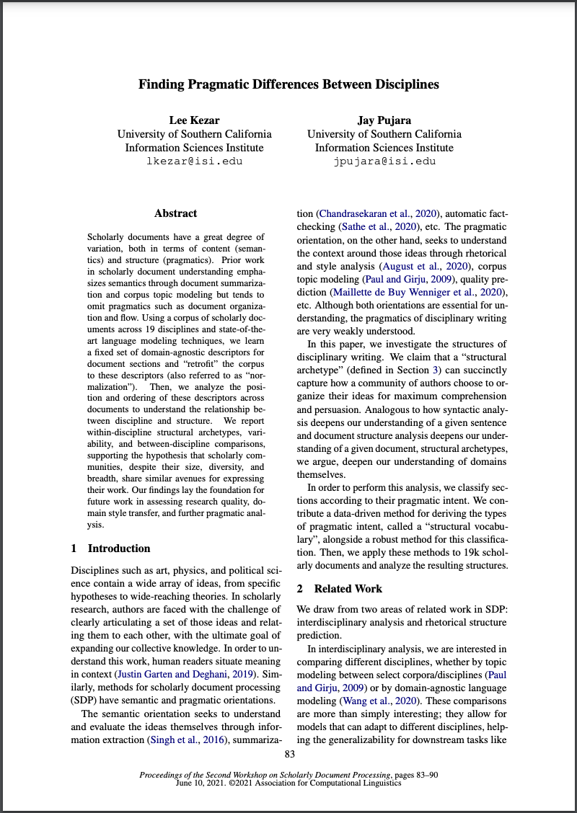

Interactive Tool

ASL Annotation Dashboard
Review continuous-video annotations and model outputs in one place.
Open Demo
I develop AI language models for American Sign Language using linguistically-informed techniques.
My current role is Postdoctoral Research Associate in the Action and Brain Lab under
Dr. Lorna Quandt, where I focus on building AI-powered learning tools for deaf and hard-of-hearing students in STEM classrooms.
I received my Ph.D. in Computer Science from the University of Southern California in 2025, and my B.S. in Computer Science from Rhodes College in 2019. Click here for my curriculum vitae.
Today, artificial intelligence (AI) technologies are radically transforming the ways we communicate, learn, and work. As an academic, my long-term goal is to broaden who can control and benefit from this transformation. I am especially interested in making AI more accessible to deaf and hard-of-hearing (DHH) people. For me, that means two things: First, I invite DHH individuals to lead AI development, both as critics of today's technology and as designers of future technology. Second, I use my formal training in natural language processing to advance those perspectives in the research. To date, my work has focused on the basic skills associated with understanding and producing American Sign Language. I adopt a linguistic approach by studying sign language , , and , then using that knowledge to help AI systems , , and sign language more effectively. This allows sign language models to include a more diverse range of signing while making their behavior more explainable to users.
Sign languages are full natural languages with their own internal structure. My research focuses on the linguistic organization of ASL signs, especially how and are patterned across the lexicon, and how those patterns can be documented, analyzed, and later used in .
ASL signs are built from smaller visual units such as handshape, movement, and location. I study these units because they provide a concrete account of sign structure and make it possible to compare signs at a level below the gloss, as in my and papers.
ASL signs also participate in broader patterns of meaning, and those patterns are not arbitrary. I study lexical semantics in ASL, including how similarities in form can align with similarities in meaning, because these regularities help explain how the lexicon is organized and how unfamiliar signs may be interpreted.
Linguistic analysis also depends on representative ASL data. I work with corpora and benchmark datasets that link videos of signing to lexical, phonological, and semantic information, including , the ASL Annotation Dashboard, and my .
I use linguistic knowledge in SL technologies to sign structure from video, unfamiliar signs, and compact representations that support broader coverage of the ASL lexicon.
This work treats linguistic structure not just as an object of study, but as a practical tool for building better models.
I train models to recover such as handshape, movement, and location directly from video, as in my and work, so higher-level predictions have something structured to build on. I use those visual components to improve sign recognition, especially when signs are rare, visually similar, or produced with variation, including in and the ASL Annotation Dashboard. I also study compact sign encodings that preserve the parts of a sign, not just its identity, so the model can generalize across related forms instead of memorizing isolated labels, which connects directly to the Embedding Visualization and my ongoing VQ work.
I use knowledge graphs to represent signs as linked bundles of linguistic facts about form, meaning, and lexical structure rather than as isolated labels, as in the and Knowledge Graph demo. I study unseen sign understanding by asking whether a model can estimate what a sign means even when it has never seen that exact sign before, using regularities between form and meaning to guide its predictions. I also use embedding neighborhoods to place related signs near one another in a shared space, so similarity itself becomes a tool for exploration, interpretation, and semantic generalization in the Embedding Visualization and in work like my .
I am interested in production models that build signs from compact discrete units rather than treating signing as an uninterpretable stream of motion, which is the central motivation behind my VQ work. This matters in part because discrete representations can improve coverage for out-of-vocabulary signs, giving models a way to represent unfamiliar items through reusable structure rather than failing on anything outside the training set, especially when paired with structure and tools like the Embedding Visualization. More broadly, I want these representations to support reconstruction and generation, so models can produce signs from structured internal units that remain tied to linguistic distinctions users can inspect and control.
Review continuous-video annotations and model outputs in one place.
Open Demo
Explore ASL signs as linked facts about form and meaning.
Open Demo
Compare how related signs cluster in learned embedding spaces.
Open Demo
This work studies how signing speed, space, and phonology varies across isolated signs, lecture-type signing, and dialogue signing.
We study how pragmatics shapes ASL articulation in educational STEM settings by collecting a motion-capture dataset spanning instructor-student dialogue, isolated vocabulary, signed lecture, and interpreted articles. Across these contexts, dialogue signs are substantially shorter than isolated productions and show pragmatic adaptations that are absent in monologue settings. We use the dataset to quantify interaction-driven variation and evaluate whether sign embeddings capture STEM signs and the degree to which repeated forms become entrenched over time.

The ASLKG is a linguistic knowledge base for studying lexicon-wide relationships related to form, meaning, and other linguistic properties.
We introduce the American Sign Language Knowledge Graph (ASLKG), a collection of linguistic facts drawn from multiple resources that connects ASL signs to phonological and semantic properties. The graph serves as an inductive prior for neurosymbolic ASL models, improving isolated sign recognition while also supporting prediction of unseen semantic features and topic classification for Youtube-ASL videos. This work argues that structured linguistic knowledge can help ASL systems both recognize forms and reason about meaning.

The Sem-Lex Benchmark provides 91,000 isolated sign videos for the tasks of recognizing signs and 16 phonological feature types.
Sign language and translation technologies have the potential to increase access and inclusion of deaf signing communities, but research progress is bottlenecked by a lack of representative data. We introduce a new resource for American Sign Language (ASL) modeling, the Sem-Lex Benchmark. The Benchmark is the current largest of its kind, consisting of over 84k videos of isolated sign productions from deaf ASL signers who gave informed consent and received compensation. Human experts aligned these videos with other sign language resources including ASL-LEX, SignBank, and ASL Citizen, enabling useful expansions for sign and . We present a suite of experiments which make use of the linguistic information in ASL-LEX, evaluating the practicality and fairness of the Sem-Lex Benchmark for isolated sign recognition (ISR). We use an SL-GCN model to show that the phonological features are recognizable with 85% accuracy, and that they are efective as an auxiliary target to ISR. Learning to recognize phonological features alongside gloss results in a 6% improvement for few-shot ISR accuracy and a 2% improvement for ISR accuracy overall. Instructions for downloading the data can be found at https://github.com/leekezar/SemLex.

We train SL-GCN models to recognize 16 phonological feature types (like handshape and location), achieving 75-90% accuracy.
Like speech, signs are composed of discrete, recombinable features called . Prior work shows that models which can are better at , motivating deeper exploration into strategies for modeling sign language phonemes. In this work, we learn graph convolution networks to recognize the sixteen phoneme"types"found in ASL-LEX 2.0. Specifically, we explore how learning strategies like multi-task and curriculum learning can leverage mutually useful information between phoneme types to facilitate better modeling of sign language phonemes. Results on the Sem-Lex Benchmark show that curriculum learning yields an average accuracy of 87% across all phoneme types, outperforming fine-tuning and multi-task strategies for most phoneme types.

We show that adding phonological targets boosts sign recognition accuracy by ~9%!
We use insights from research on American Sign Language (ASL) to train models for (ISLR), a step towards automatic sign language . Our key insight is to explicitly recognize the role of phonology in sign production to achieve more accurate ISLR than existing work which does not consider sign language phonology. We train ISLR models that take in pose estimations of a signer producing a single sign to predict not only the sign but additionally its phonological characteristics, such as the handshape. These auxiliary predictions lead to a nearly 9% absolute gain in sign recognition accuracy on the WLASL benchmark, with consistent improvements in ISLR regardless of the underlying prediction model architecture. This work has the potential to accelerate linguistic research in the domain of signed languages and reduce communication barriers between deaf and hearing people.

We classify sections in scholarly documents according to their pragmatic intent and study the differences between 19 disciplines.
Scholarly documents have a great degree of variation, both in terms of content (semantics) and structure (pragmatics). Prior work in scholarly document understanding emphasizes semantics through document summarization and corpus topic modeling but tends to omit pragmatics such as document organization and flow. Using a corpus of scholarly documents across 19 disciplines and state-of-the-art language modeling techniques, we learn a fixed set of domain-agnostic descriptors for document sections and “retrofit” the corpus to these descriptors (also referred to as “normalization”). Then, we analyze the position and ordering of these descriptors across documents to understand the relationship between discipline and structure. We report within-discipline structural archetypes, variability, and between-discipline comparisons, supporting the hypothesis that scholarly communities, despite their size, diversity, and breadth, share similar avenues for expressing their work. Our findings lay the foundation for future work in assessing research quality, domain style transfer, and further pragmatic analysis.
